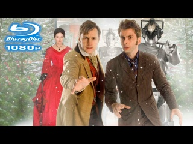

чаще всего это 14-я серия четвертого сезона

The Next Doctor
рождественский спецвыпуск
25 декабря 2008
Формат: 60-минутный эпизод
| Варианты озвучек: | * Разные: смотрите по инструкции чаще всего это 14-я серия четвертого сезона |
|---|---|
| Скачивание и просмотр: |
В серии произошло возвращение киберлюдей из серии «Судный день» (2006), которые из-за событий серий «Украденная Земля» / «Конец путешествия» оказались на Земле в 1851 году.